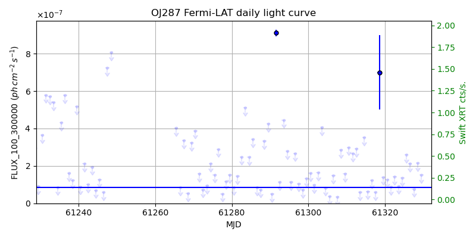
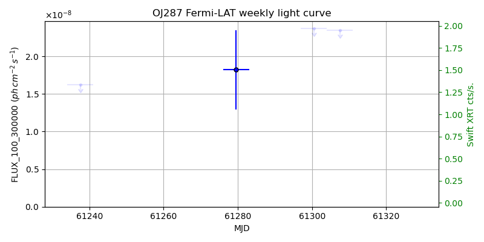
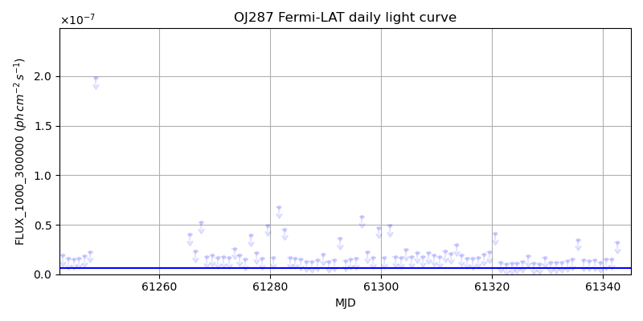
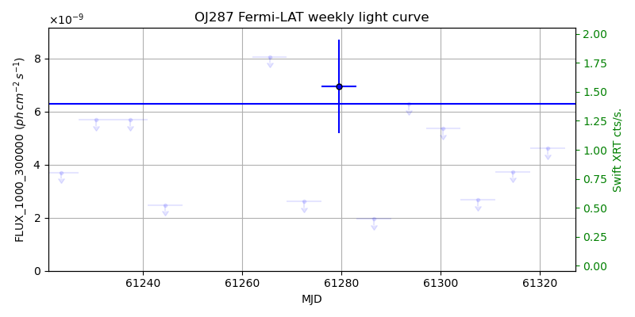

LAT Lightcurve site: https://fermi.gsfc.nasa.gov/ssc/data/access/lat/msl_lc/source/OJ_287
Swift site: https://www.swift.psu.edu/monitoring/source.php?source=OJ287
NED: Query
Time of last update of this page: UT: 2026-10-24 15:20 (MJD: 61337.639)
| Property | Value |
|---|---|
| R.A. | 8:54:48.96 |
| Dec. | 20:06:32.4 |
| z | 0.306 |
| 3FGL SpectrumType | LogParabola |
| 3FGL PL Index | |
| 3FGL Flux_100_300000 | 8.41e-08 1 / (s cm2) |
| 3FGL Flux_1000_300000 | 6.30e-09 1 / (s cm2) |
| 3FGL Flux >200 GeV | 5.46e-12 1 / (s cm2) |
| 3FGL Extrap. Crab >200 GeV | 0.02 |
| 3FGL Flux After EBL Absorption >200GeV | 1.90e-12 1 / (s cm2) |
| 3FGL EBL Crab Fraction >200GeV | 0.01 |

| MJD | dMJD | Flux | dFlux | Frac3FGL | FracCrab>200GeV | EBLFracCrab>200GeV |
|---|---|---|---|---|---|---|
| 61332.50 | 0.50 | 4.58e-08 | 0.00e+00 | 0.00 | 0.00 | 0.00 |
| 61333.50 | 0.50 | 5.09e-08 | 0.00e+00 | 0.00 | 0.00 | 0.00 |
| 61334.50 | 0.50 | 3.85e-07 | 0.00e+00 | 0.00 | 0.00 | 0.00 |
| 61335.50 | 0.50 | 1.48e-07 | 0.00e+00 | 0.00 | 0.00 | 0.00 |
| 61336.50 | 0.50 | 6.42e-08 | 0.00e+00 | 0.00 | 0.00 | 0.00 |

| MJD | dMJD | Flux | dFlux | Frac3FGL | FracCrab>200GeV | EBLFracCrab>200GeV |
|---|---|---|---|---|---|---|
| 61300.50 | 3.50 | 2.37e-08 | 0.00e+00 | 0.00 | 0.00 | 0.00 |
| 61307.50 | 3.50 | 2.35e-08 | 0.00e+00 | 0.00 | 0.00 | 0.00 |
| 61314.50 | 3.50 | 6.93e-08 | 0.00e+00 | 0.00 | 0.00 | 0.00 |
| 61321.50 | 3.50 | 1.05e-07 | 0.00e+00 | 0.00 | 0.00 | 0.00 |
| 61328.50 | 3.50 | 2.92e-08 | 0.00e+00 | 0.00 | 0.00 | 0.00 |

| MJD | dMJD | Flux | dFlux | Frac3FGL | FracCrab>200GeV | EBLFracCrab>200GeV |
|---|---|---|---|---|---|---|
| 61332.50 | 0.50 | 1.22e-08 | 0.00e+00 | 0.00 | 0.00 | 0.00 |
| 61333.50 | 0.50 | 1.35e-08 | 0.00e+00 | 0.00 | 0.00 | 0.00 |
| 61334.50 | 0.50 | 1.49e-08 | 0.00e+00 | 0.00 | 0.00 | 0.00 |
| 61335.50 | 0.50 | 3.50e-08 | 0.00e+00 | 0.00 | 0.00 | 0.00 |
| 61336.50 | 0.50 | 1.44e-08 | 0.00e+00 | 0.00 | 0.00 | 0.00 |

| MJD | dMJD | Flux | dFlux | Frac3FGL | FracCrab>200GeV | EBLFracCrab>200GeV |
|---|---|---|---|---|---|---|
| 61300.50 | 3.50 | 5.37e-09 | 0.00e+00 | 0.00 | 0.00 | 0.00 |
| 61307.50 | 3.50 | 2.67e-09 | 0.00e+00 | 0.00 | 0.00 | 0.00 |
| 61314.50 | 3.50 | 3.74e-09 | 0.00e+00 | 0.00 | 0.00 | 0.00 |
| 61321.50 | 3.50 | 4.62e-09 | 0.00e+00 | 0.00 | 0.00 | 0.00 |
| 61328.50 | 3.50 | 1.65e-09 | 0.00e+00 | 0.00 | 0.00 | 0.00 |
--------------------------------------------------------- Using user-supplied coords: 8:54:48.96 20:06:32.4 2000 --------------------------------------------------------- FLWO UT night of: 2026-10-25 Local Sid. @ Midnight: 01:50 Sunset (-15.0) (local, UT): 18:49 01:49 Sunrise (-15.0) (local, UT): 05:27 12:27 Moonrise (local, UT): Moonset (local, UT): Moon phase: 0.99 --------------------------------------------------------- AzTime LSID UT Obj_el Obj_az Mn_el Mn_az Sep. --------------------------------------------------------- 18:49 20:39 01:49 -38.2 354.9 26.2 94.5 113.0 19:19 21:09 02:19 -38.2 3.9 32.4 98.6 112.7 19:49 21:39 02:49 -37.3 12.8 38.6 103.2 112.5 20:19 22:09 03:19 -35.4 21.2 44.7 108.4 112.2 20:49 22:39 03:49 -32.7 29.1 50.6 114.6 112.0 21:19 23:09 04:19 -29.2 36.3 56.2 122.3 111.8 21:49 23:39 04:49 -25.2 42.8 61.2 132.2 111.6 22:19 00:09 05:19 -20.6 48.6 65.5 145.3 111.4 22:49 00:39 05:49 -15.6 53.9 68.4 162.2 111.2 23:19 01:10 06:19 -10.3 58.7 69.4 182.2 111.0 23:49 01:40 06:49 -3.4 63.0 68.2 202.0 110.8 00:19 02:10 07:19 1.5 67.1 65.1 218.6 110.6 00:49 02:40 07:49 7.2 70.8 60.8 231.3 110.4 01:19 03:10 08:19 13.3 74.5 55.7 240.9 110.2 01:49 03:40 08:49 19.5 78.0 50.1 248.5 110.0 02:19 04:10 09:19 25.8 81.4 44.3 254.6 109.8 02:49 04:40 09:49 32.1 85.0 38.2 259.8 109.5 03:19 05:10 10:19 38.5 88.7 32.1 264.4 109.3 03:49 05:40 10:49 44.9 92.7 26.0 268.5 109.1 04:19 06:10 11:19 51.3 97.3 19.9 272.4 108.8 04:49 06:40 11:49 57.6 102.8 13.8 276.2 108.5 05:19 07:11 12:19 63.7 109.9 7.8 279.9 108.3 05:27 07:18 12:27 65.2 112.2 6.2 280.9 108.2 --------------------------------------------------------- Moon up all night, no dark time. Dark hours >55 deg.: 0.00